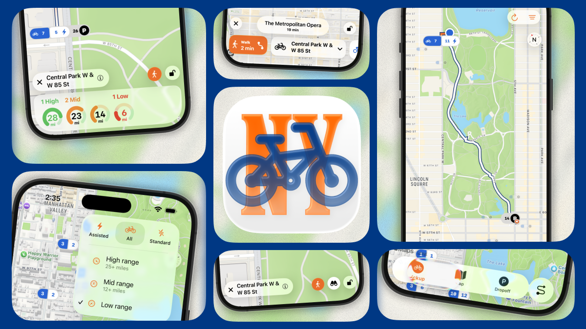

Station Details
EBike Charges, Walking Directions, and station Street level Views all visible at a glance
EBike Charges, Walking Directions, and station Street level Views all visible at a glance
Browse nearby bike stations on an interactive map and quickly see where bikes and docks are available.
Plan efficient point-to-point rides with destination search and directions designed for bike commuters.
Understand station density and neighborhood options before you ride, so every trip is less guesswork.

NYBiker helps riders make quicker station and route decisions when every minute in the city matters.